本文章將介紹如何調整 HLS 低延遲
1. 首先在 Applications 選擇想設定低延遲的 Live Applications 點擊 Edit
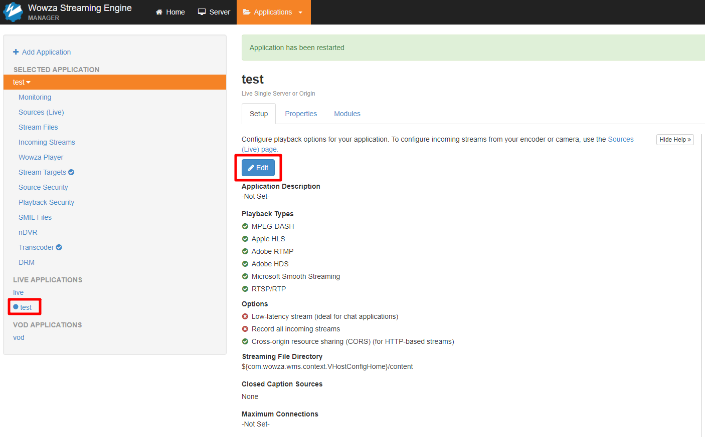
2. 選擇 Low-latency stream ( ideal for chat applications )
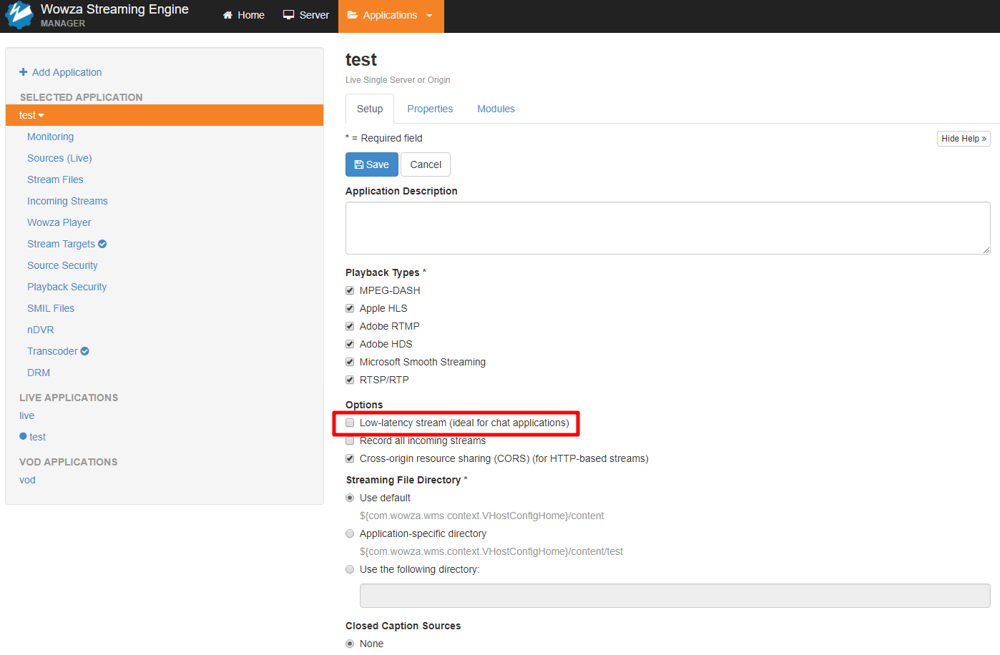
3. 設定好後點選 Save 需要重新整理
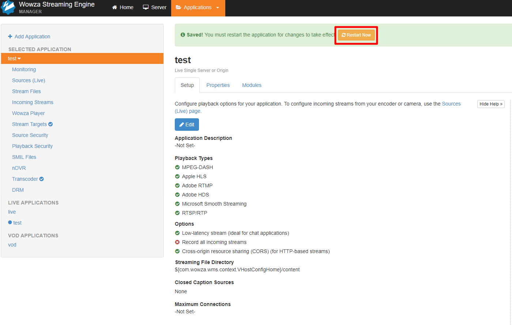
4. 也可以再建立 Live Applications 的時候先設定好
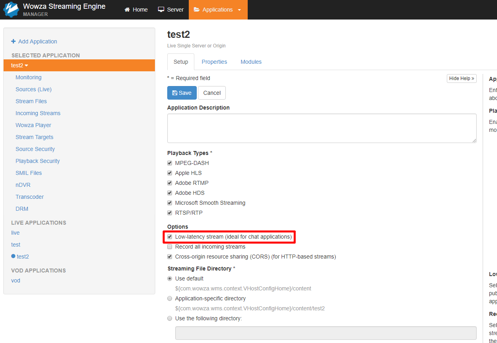
5. 設定好 Low-latency stream 點選上面分頁 Properties
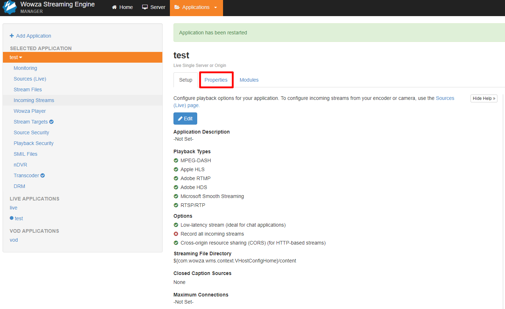
6. Quick Links 選擇 Cupertino Streaming Packetizer
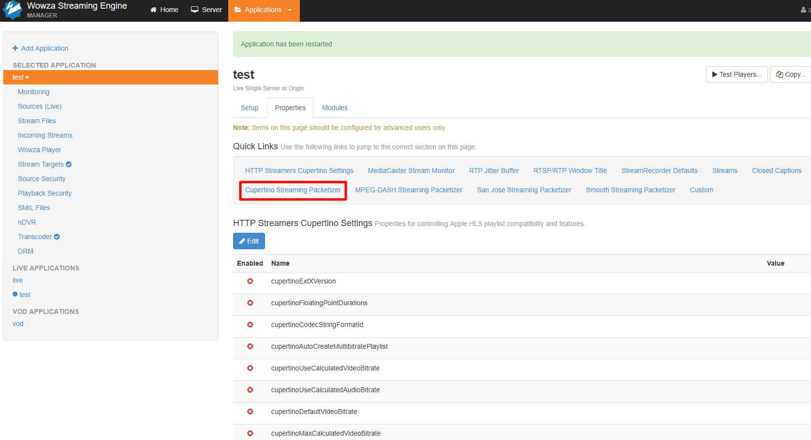
7. 點選 Edit 後開始設定裡面參數 cupertinoChunkDurationTarget 設定 1000 ( 1000毫秒等於1秒 )、cupertinoMaxChunkCount 設定 50、cupertinoPlaylistChunkCount 設定 12
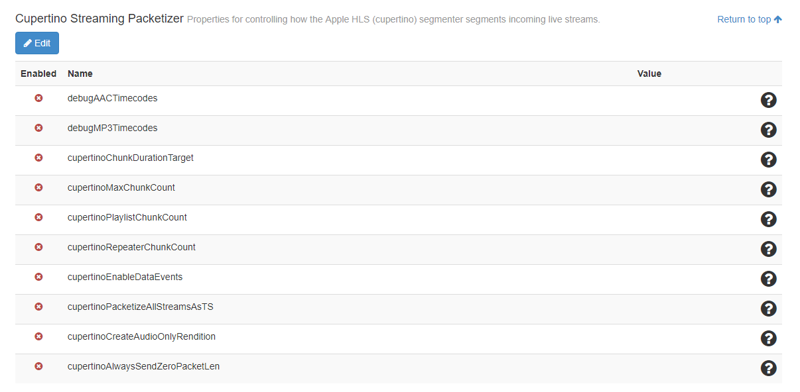
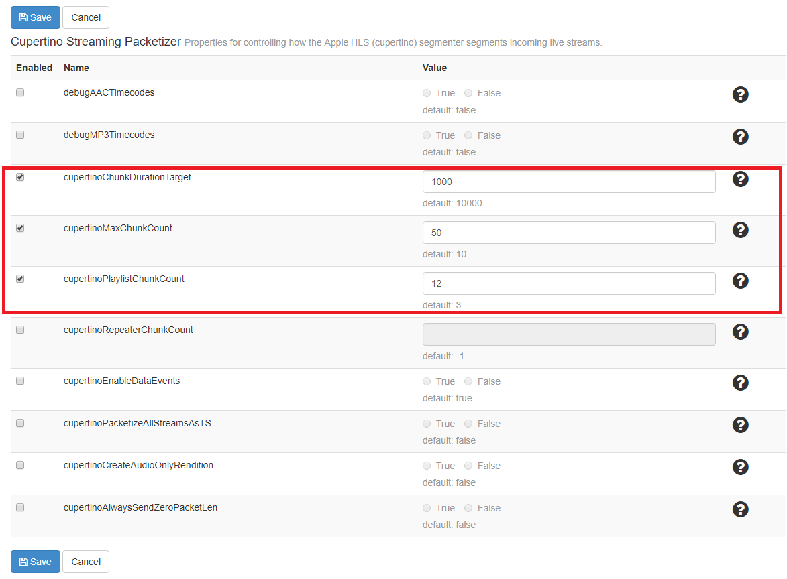
8. 設定好後一樣要重新整理
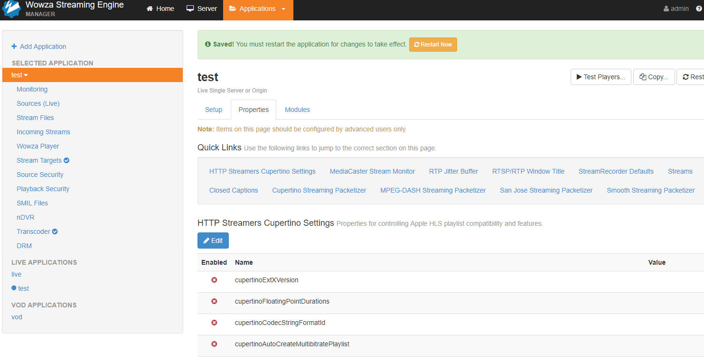
9. 設定好後回到 Quick Links 選擇 Custom
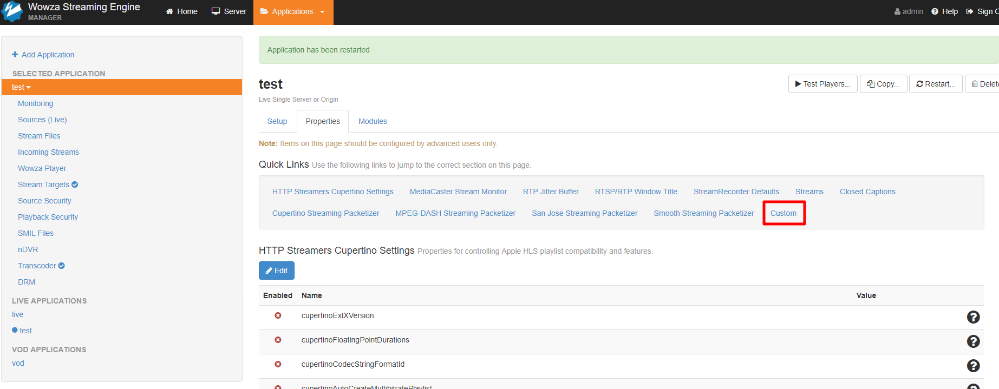
10. 點選 Edit 點選 Add Custom Property 後開始設定參數
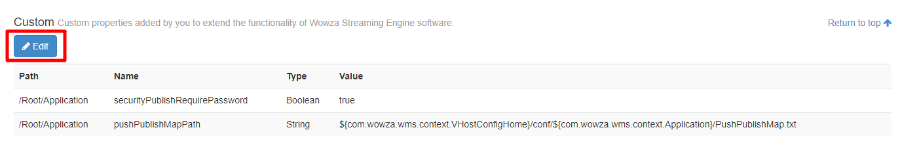
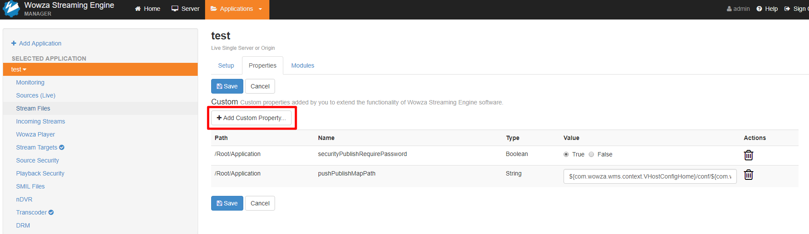
11. 參數為 Path：/Root/Application/LiveStreamPacketizer、Name：cupertinoMinPlaylistChunkCount、Type：Integer、Value：6
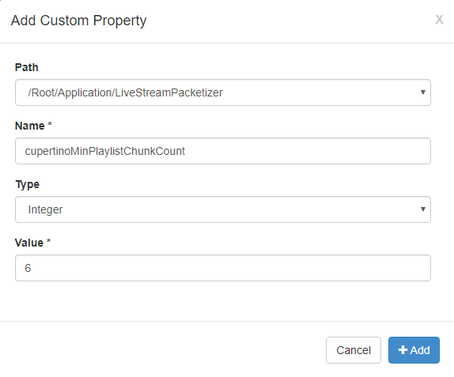